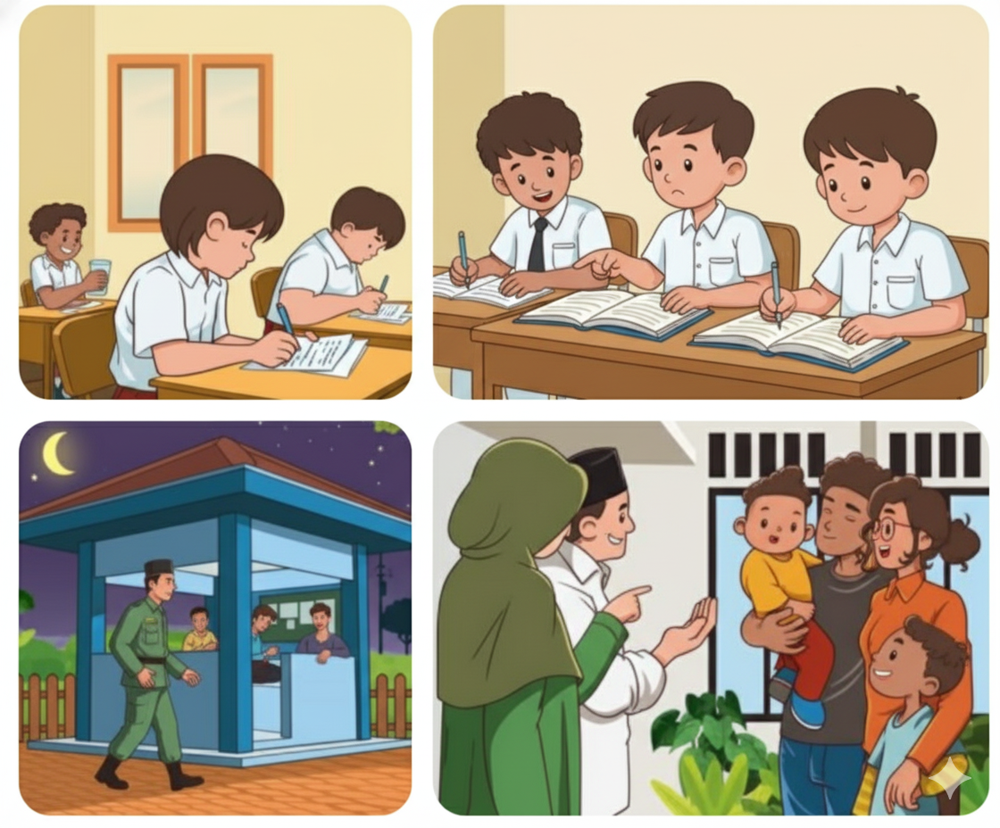
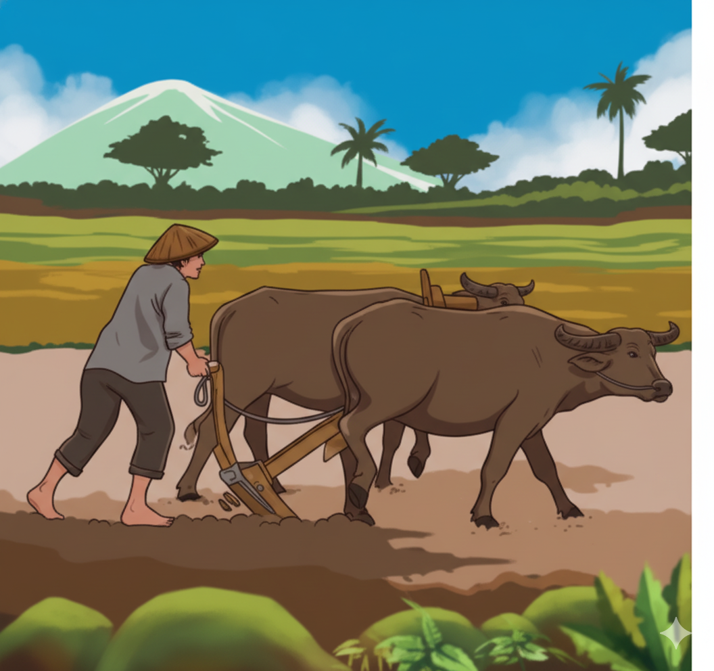
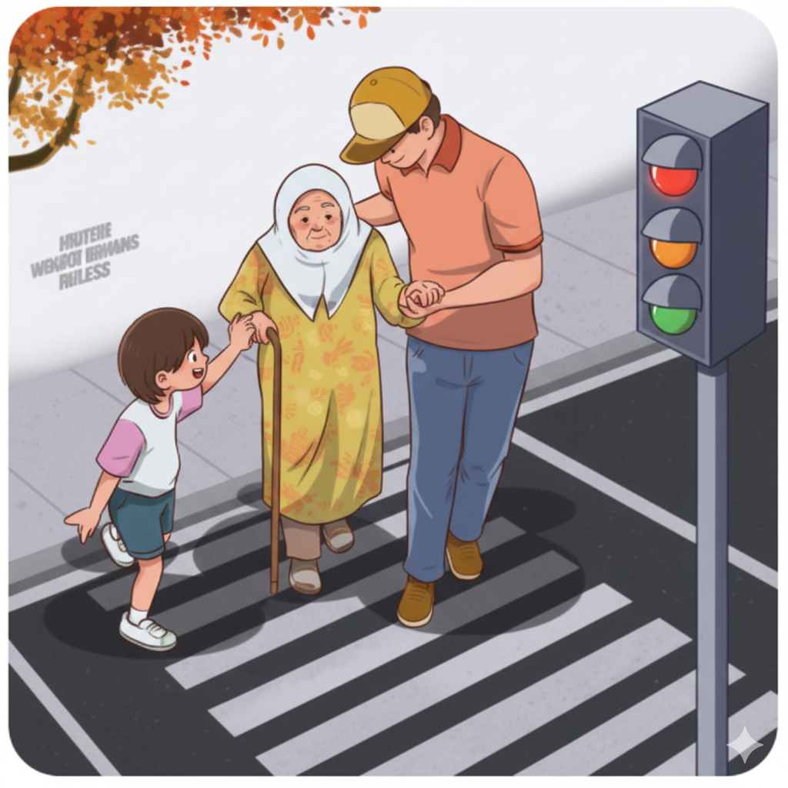
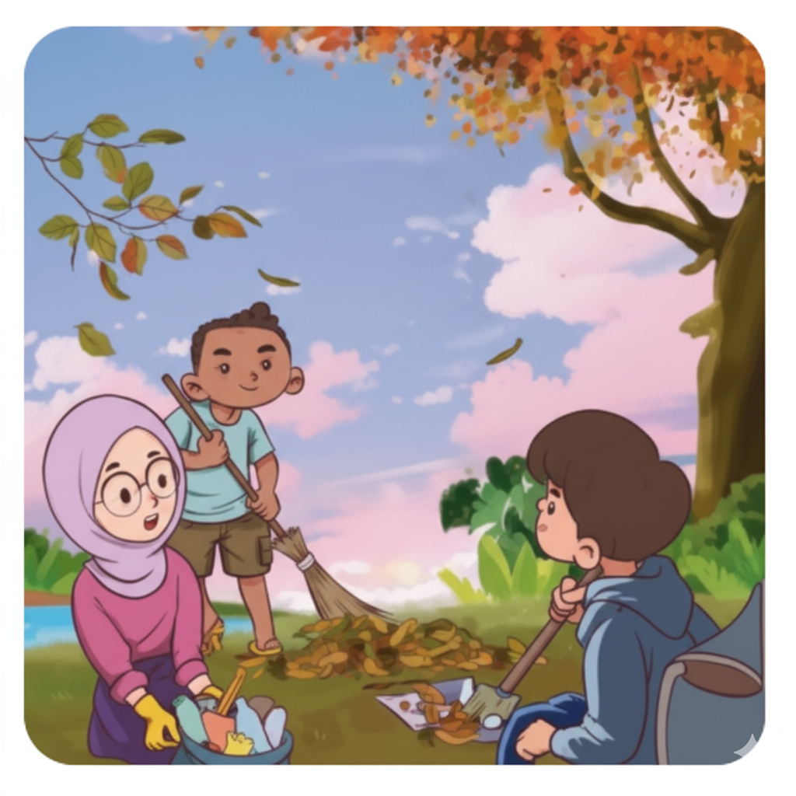
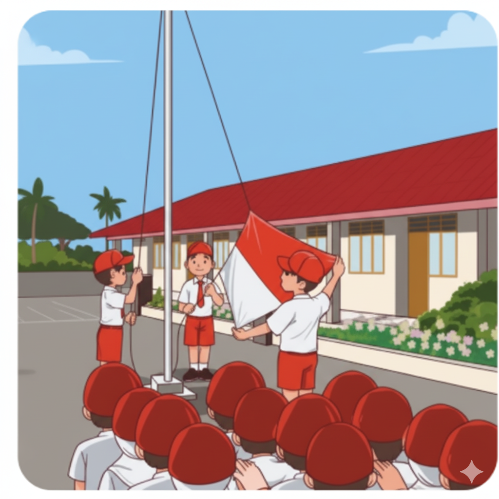
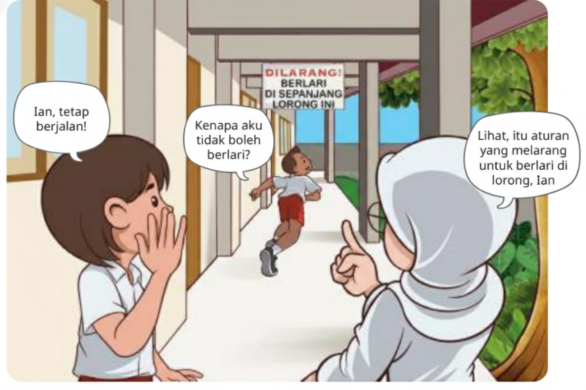
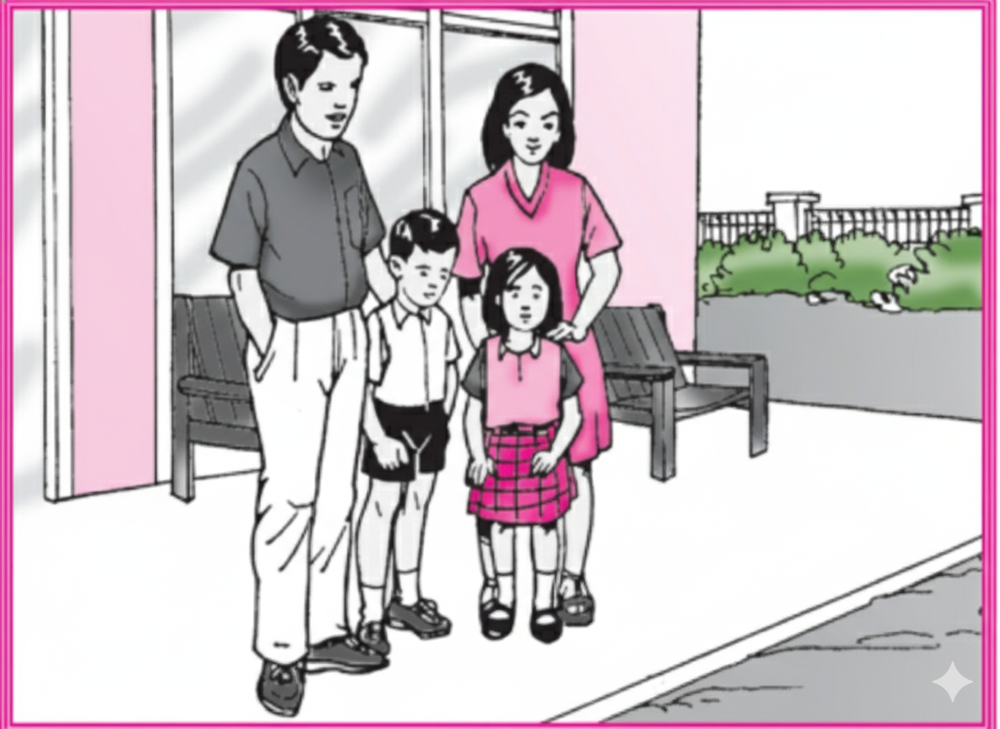
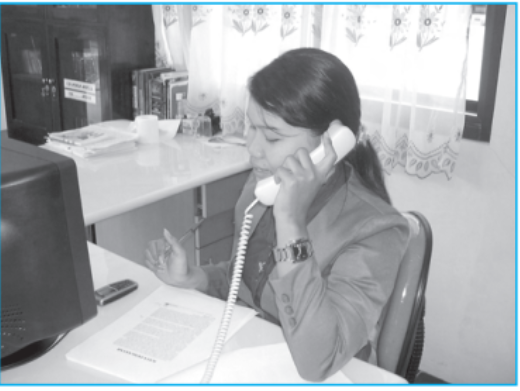
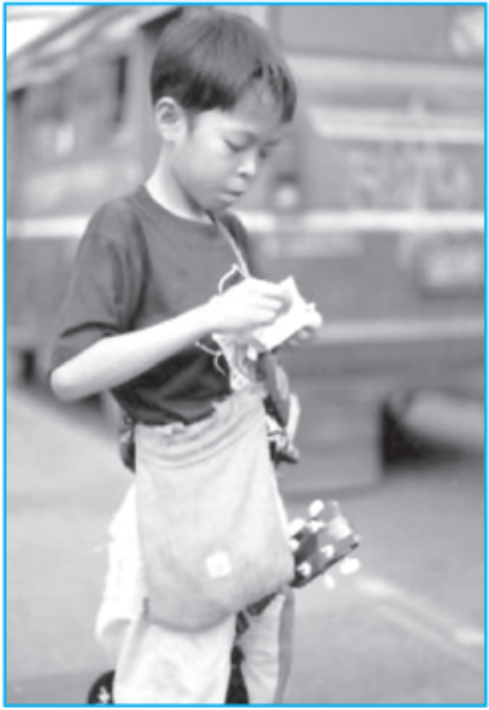

Kembali ke Beranda
Kelas 5A (Kelas III) - Kelompok 1
Analisis Materi IPS: Peran di Lingkungan
Materi ini diadaptasi dari Analisis Capaian Pembelajaran Fase B (Kelas III).
A. Peran dan Tugasku di Lingkungan Sekolah dan Masyarakat

Gambar 6.1 Contoh peran dan tugasku di lingkungan sekolah dan masyarakat
Siap-Siap Belajar
Di kelas III, kamu sudah belajar mengenai peran, tugas, tanggung jawab, dan interaksi sosial di lingkungan rumah. Tahukah kamu selain di rumah, kita pun memiliki peran, tugas, tanggung jawab dan juga melakukan interaksi sosial di sekolah dan lingkungan masyarakat?
Sebelum memulai kegiatan pembelajaran kali ini, coba tuliskan peran, tugas, dan tanggung jawab kalian di rumah. Setelah itu, tuliskan juga peraturan yang berlaku di lingkungan rumahmu.
Setelah kalian mengenal dan menerapkan peran, tugas, dan tanggung jawab di lingkungan rumah. Sekarang, kalian akan mengenal dan menerapkan hal tersebut di lingkungan yang lebih luas, seperti lingkungan sekolah dan lingkungan masyarakat. Kalian juga akan mengenal lebih banyak peran setiap manusia melalui kegiatan yang akan dilakukan.
Ayo, Mengamati
1. Amatilah aktivitas yang terjadi di lingkungan sekolah dan lingkungan masyarakat.
2. Amati peran dari setiap orang dalam aktivitas tersebut.
3. Tuliskan atau gambarkan peran yang kamu temukan pada buku tugas.
Ayo, Menyelidiki
"Mengapa peran manusia itu beragam? Apakah peran kita sama di setiap lingkungan?"
Ikuti instruksi berikut untuk memulai penyelidikan:
- Berkumpullah dengan kelompok yang sudah ditentukan oleh gurumu.
- Diskusikan bersama anggota kelompok, peran dan tugas kalian dalam kehidupan sehari-hari.
- Kelompokkan tugas tersebut seperti pada contoh tabel berikut.
| No. | Peran | Tugas | Di Sekolah | Di Masyarakat |
|---|
| 1. | Anggota kelompok | Mengerjakan tugas sesuai dengan kesepakatan kelompok. | ✓ | |
| 2. | Warga masyarakat | Mengikuti kegiatan kerja bakti | | ✓ |
| dst. | | | | |
Ayo, Menyimpulkan
Wah, hebat! Sampai tahap ini kamu sudah berhasil melakukan penyelidikan! Sekarang, kerjakan tugas berikut:
- Gunakan pengetahuan yang kamu dapatkan selama melakukan penyelidikan.
- Tulislah kesimpulan dari tujuan penyelidikan yang kalian lakukan. dengan menjawab pertanyaan: "Mengapa peran manusia itu beragam? Apakah peran kita sama di setiap lingkungan?"
- Kamu dibebaskan membuat kesimpulan dalam bentuk apa pun. Misalnya, dalam bentuk tulisan, lagu, komik, dan lain-lain.
Belajar Lebih Lanjut
Setiap manusia itu beragam, seperti karakter, tujuan, minat, juga bakat. Nah, dari keberagaman tersebutlah yang menyebabkan peran dan tugas manusia juga beragam. Tidak hanya itu, tempat tinggal dan mata pencaharian seseorang juga dapat memengaruhi peran.

Sebagian orang yang tinggal di wilayah pedesaan, berperan sebagai petani, salah satu tugasnya yaitu membajak sawah.

Salah satu peran yang ada di sekolah adalah peserta didik, tugasnya di sekolah antara lain mengikuti upacara bendera.

Di lingkungan masyarakat, peran kita sebagai makhluk sosial memiliki tugas untuk saling membantu.

Menjaga kebersihan taman di sekitar rumah juga menjadi tugas kita sebagai warga setempat
Manusia berperan sebagai seorang individu, juga berperan sebagai anggota kelompok di dalam kelas, maupun anggota kelompok di dalam masyarakat,manusia juga memiliki berbagai peran lainnya.
B. Peraturan dan Tanggung Jawabku

Di kelas III kalian telah mempelajari topik peraturan dan tanggung jawab, serta penerapannya di lingkungan rumah. Kali ini, kalian akan mempelajari topik tersebut di lingkungan sekolah dan masyarakat. Suatu tempat atau wilayah selalu memiliki peraturan, baik peraturan tertulis maupun peraturan tidak tertulis. Itulah yang dapat membantu kita bertanggung jawab untuk menjalankan peran dan tugas.
Hak dan Kewajiban di Keluarga
Setiap anggota keluarga, mempunyai hak dan kewajiban sesuai dengan peran masing-masing. Ayah berperan sebagai kepala keluarga. Ibu berperan sebagai pendamping kepala keluarga. Anak berperan sebagai anggota keluarga.
Kewajiban ayah bertanggung jawab mencari nafkah. Ibu membantu ayah mengurus semua keperluan keluarga. Tugas ibu di antaranya adalah menyiapkan makanan untuk keluarga.
Kewajiban anak-anak yaitu belajar dan membantu melakukan pekerjaan rumah tangga. Anak-anak dapat juga membantu hal lainnya, seperti menyapu, mengepel, atau merawat tanaman.
Selain memiliki kewajiban, seluruh anggota keluarga juga memiliki hak. Contoh hak ayah dan ibu yaitu dihormati dan disayangi anak-anak. Anak-anak juga memiliki hak untuk disayangi orangtuanya dan dicukupi semua kebutuhannya.
Menjaga keseimbangan hak dan kewajiban, merupakan pengamalan sila kelima Pancasila.
Kedudukan dan Peran Anggota Keluarga
Keluarga yang terdiri atas ayah ibu dan anak anak disebut keluarga batih atau keluarga inti. Ada juga keluarga gabung (keluarga luas) jika ada anggota keluarga lain seperti kakek, nenek, paman, atau bibi.
Kedudukan di Keluarga
Setiap anggota keluarga memiliki kedudukan. Ayah mempunyai kedudukan sebagai kepala keluarga. Kedudukan ibu sebagai ibu rumah tangga. Anak-anak kedudukannya sebagai anggota keluarga.
Peran di Keluarga
Peran Ayah: Bertugas mencari nafkah, memimpin, dan melindungi keluarga.
Peran Ibu: Mengatur rumah tangga, membimbing, merawat, dan mendidik anak-anak. Ibu juga bisa membantu mencari nafkah tambahan.
Peran Anak: Berperan membantu orang tua, mematuhi nasihat orang tua, dan menjaga harta benda jika orang tua tidak di rumah.

C. Perubahan Peran
Kita kini hidup pada zaman yang maju. Pendidikan semakin tinggi. Pekerjaan semakin beragam. Itu memengaruhi peran seseorang.
Perubahan Peran Ibu
Dulu, peran utama ibu adalah mengurus rumah tangga. Sekarang, banyak ibu yang juga bekerja di kantor atau perusahaan untuk mencari nafkah dan menerapkan keahliannya. Ini adalah contoh perubahan peran ibu.

Perubahan Peran Anak
Tugas utama seorang anak adalah belajar. Namun, karena tuntutan kebutuhan atau kondisi keluarga, peran anak bisa berubah. Contohnya, ada anak yang harus bekerja (seperti Tono atau Yoyo) untuk membantu mencukupi kebutuhan keluarga, padahal seharusnya mereka belajar di rumah.

Ringkasan
- Kedudukan ayah sebagai: suami dan kepala keluarga.
- Kedudukan ibu sebagai: istri dan ibu rumah tangga.
- Peran ayah: memimpin keluarga, melindungi, dan mencari nafkah.
- Peran ibu: pengelola rumah tangga, pendidik, dan pembimbing anak.
- Peran anak: membantu orang tua dan belajar.
Renungan
Kita memiliki kedudukan. Kita juga memiliki peran. Kedudukan kita berbeda-beda. Peran kita pun beragam. Hargailah kedudukan dan peran orang lain. Kamu akan dihargai pula. Begitulah cara kita meraih hidup bahagia.